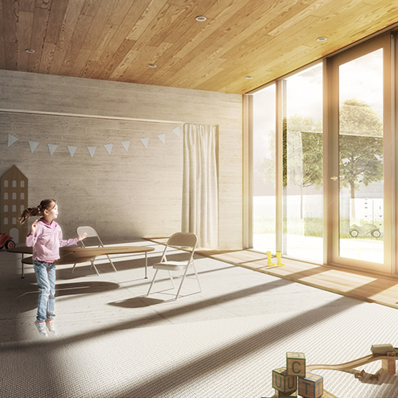
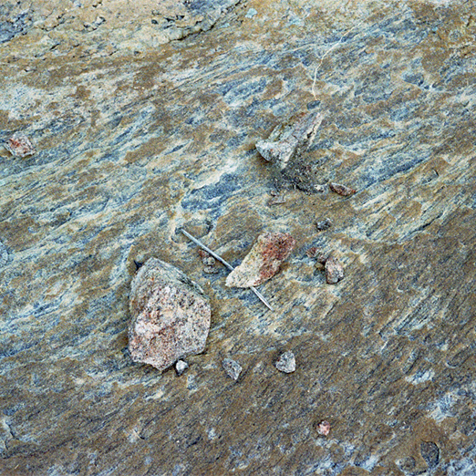
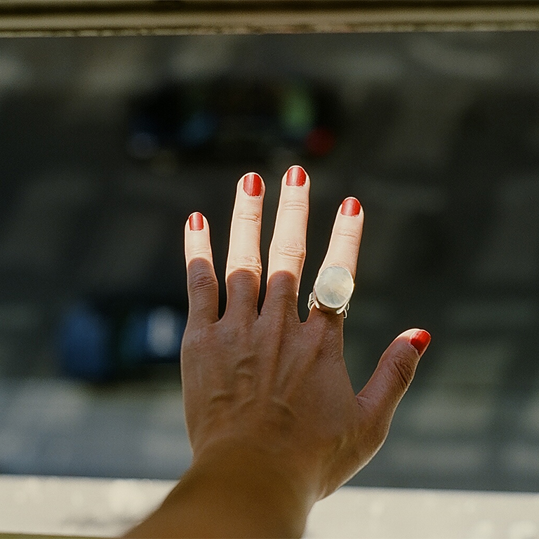
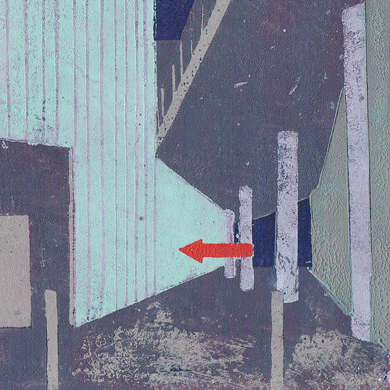

<!DOCTYPE html>
<html lang="en"></html>
<head>
  <meta charset="UTF-8"/>
  <title>Colour Archive</title>
  <link rel="stylesheet" href="../dist/style.css"/>
  <link href="http://fonts.googleapis.com/css?family=Pinyon+Script|Raleway:400,300,200" rel="stylesheet" type="text/css"/>
  <meta name="viewport" content="width=device-width, initial-scale=1.0"/>
</head>
<body>
  <header class="hero">
    <h1>Colour Archive</h1>
    <h2>Elegant Web Solutions</h2>
    <div class="container"><a href="https://twitter.com/colourarchive" target="_blank"></a><a href="https://www.facebook.com/pammenheimer" target="_blank"></a><a href="http://instagram.com/pammooo" target="_blank"></a><a href="http://ca.linkedin.com/in/tungpamela" target="_blank"></a><a href="http://pinterest.com/colourarchive" target="_blank"></a></div>
  </header>
  <div class="blurb clearfix">
    <div class="container">
      <p>An inspirational quote is going to make an appearance here real soon.</p>
    </div>
  </div>
  <div class="profile clearfix">
    <div class="prSide">
      <h2>Who is Colour Archive?</h2>
      <p>My name is Pamela Tung.  I am a multi-disciplinary designer who is committed to creating a web that is more beautiful.</p>
      <p>My background is in Architecture, having earned an MArch from the University of Toronto, and with previous working experience in the Architecture and Urban Design fields.  In the world of Web Development, my experiences have translated into a growing passion for the way that layers of code are structured, and in building user-friendly and functional websites.</p>
      <p>I am always deriving inspiration from my hobbies, which include cycling, textile and paper crafts, and oggling vintage furniture.  I have a special fondness for natural materials.</p>
    </div>
    <div class="prImage">		</div>
  </div>
  <div class="galleryTitle clearfix">
    <div class="container">
      <p>Work by Pamela</p>
    </div>
  </div>
  <div class="gallery clearfix">
    <div class="container">
      <div class="gallery1"><a href="http://colourarchive.co" target="_blank"></a></div>
      <div class="gallery2"><a href="http://colourarchive.co" target="_blank"></a></div>
      <div class="gallery3"><a href="http://colourarchive.co" target="_blank"></a></div>
      <div class="gallery4"><a href="http://pamelatung.com" target="_blank"></a></div>
      <div class="gallery5"><a href="http://pamelatung.com" target="_blank"></a></div>
      <div class="gallery6"><a href="http://pamelatung.com" target="_blank"></a></div>
    </div>
  </div>
  <div class="contact clearfix">
    <div class="contactSocial">
      <h2>Follow me on social media:</h2><a href="https://twitter.com/colourarchive" target="_blank"></a><a href="https://www.facebook.com/pammenheimer" target="_blank"></a><a href="http://instagram.com/pammooo" target="_blank"></a><a href="http://ca.linkedin.com/in/tungpamela" target="_blank"></a><a href="http://pinterest.com/colourarchive" target="_blank"></a>
      <form action="message.php" class="contact">
        <input type="text" name="first name" placeholder="First Name" class="firstName"/>
        <input type="text" name="last name" placeholder="Last Name" class="lastName"/>
        <input type="email" name="email" placeholder="Enter your email here" class="email"/>
        <textarea name="message" placeholder="Message" class="message"></textarea>
        <input type="submit" class="submit"/>
      </form>
    </div>
    <div class="contactForm"><a href="https://twitter.com/colourarchive" data-widget-id="487606984825245697" data-chrome="transparent" class="twitter-timeline">Tweets by @colourarchive
        <script>!function(d,s,id){var js,fjs=d.getElementsByTagName(s)[0],p=/^http:/.test(d.location)?'http':'https';if(!d.getElementById(id)){js=d.createElement(s);js.id=id;js.src=p+"://platform.twitter.com/widgets.js";fjs.parentNode.insertBefore(js,fjs);}}(document,"script","twitter-wjs");</script></a></div>
  </div>
  <footer class="clearfix">
    <div class="container">
      <p>&copy; Colour Archive 2014</p>
    </div>
  </footer>
</body>